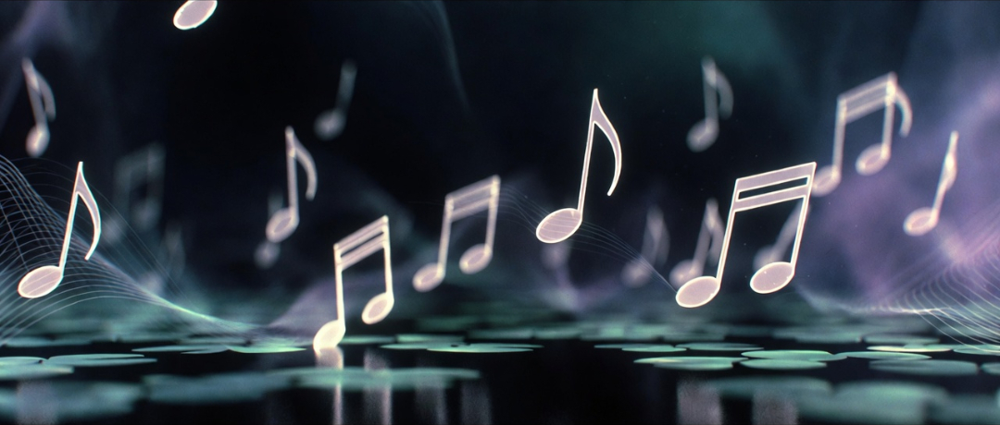

Up until now in this series, I’ve been focused on the KV cache — the growing pond of lily pads that holds the accumulated memory and context of the conversation. I’ve also described how generation proceeds one token at a time, with each new token being appended and becoming part of the history.
But there’s a crucial piece I haven’t properly introduced yet: the hidden state.
At every single step of generation, the model maintains a hidden state — its current, continuously updated internal representation of the entire sequence so far. This is not a fixed or permanent thing. It is recomputed fresh at each step. After attention pulls relevant information from the KV cache and the feed-forward network does its non-linear work, this hidden state becomes the foundation for deciding what the next token should be.
It does not directly point to one specific word. Instead, it acts as a dynamic pointing vector in latent space — gently nudging the probability distribution toward a fuzzy semantic region where coherent next tokens are most likely to appear.
This hidden state is the real “live” carrier of momentum in the generation process. It is what gives the output its sense of direction and continuity.
To make this concrete, I’ve been using the hyper-frog as a simplification. The KV cache is the pond, and the lily pads represent already-formed concepts and strong semantic regions. Some lily pads come from tokens already generated in the current conversation, while others are activated or newly formed from the model’s pre-trained knowledge and intuition. These pads — whether familiar or freshly created — give the frog reason to venture in a particular direction. The hidden state is the frog’s live internal compass — a dynamic pointing vector that senses the nearby lily pads and nudges it toward the most promising fuzzy region.
The next token is not itself a lily pad. It is the discrete step the frog takes — a single token being appended in the moment. Only after the token is sampled and its Key and Value are added to the cache does it begin to reinforce or help form a new conceptual landmark. In this way, generation is less about landing on pre-defined lily pads and more about leaving a trail of footsteps that slowly crystallize into meaningful regions of coherence.
This process feels remarkably similar to jazz improvisation. Jazz musicians often work within some shared mission plan — a chord progression, a key, a form — even when the progression itself is being collectively discovered in the moment. The soloist plays a note with some general harmonic intent, but its true place in the larger picture is frequently only understood after it has been sounded and the surrounding context has been re-evaluated. The band listens in real time, re-weighting previous notes to support or resolve the emerging line.
In transformer generation, the KV cache and prefill provide the underlying harmonic framework. The hidden state carries the momentum of the most recent notes. Attention functions like the band’s collective harmonic and melodic awareness — constantly re-weighting past tokens in light of the current position. Each sampled token is an improvised note. Sometimes the resolution is clean and expected. Sometimes it is more adventurous. But even when the output feels improvisational, it is rarely random. It is navigating within the constraints and momentum set by the accumulated context.
What makes this especially interesting is the retroactive nature of coherence. Many tokens that ultimately feel inevitable were not obviously the best choice when first selected. Their coherence often only becomes clear once the token is played, the new hidden state updates, and the larger trajectory snaps into focus. The frog moves forward not because it already knows the perfect next landing spot, but because its compass keeps pointing toward the region where the next note will most naturally belong — once it has actually been played.
It’s also worth noting a more sobering truth: LLMs are still very much a “garbage in, garbage out” system — just a highly sophisticated one. The model has an impressive ability to take poor, contradictory, or low-quality input and transform it into fluent, confident-sounding output. The KV cache and pre-trained weights give it a strong statistical and contextual basis for doing so, but in the end, it is still generating sensible garbage. The eloquence can mask the weakness of the input, making the garbage much harder to detect.
Because it appears practically impossible to train a capable LLM on data stripped of all analogy and metaphor, we can reasonably say that analogy and metaphor inform the next token being generated. The model’s statistical predictions are shaped by the pervasive figurative patterns in its training data. In that sense, analogy and metaphor are foundational components that influence the generation process, even if they are not an explicit internal mechanism during inference.
At this point, I should offer a gentle warning. The analogies and metaphors I’m using in this article — the hyper-frog, the jazz improvisation, and the idea of waypoints — are tools I’m providing to help explain and make sense of how the generation process feels from the outside. They are interpretive lenses, not claims about the internal mechanics. The transformer is not “doing analogy” or “improvising like a jazz musician” in any literal sense. It is performing matrix operations, attention, and probabilistic sampling. My analogies are simply a way to describe the experience and patterns we observe in the output, not assertions that analogy itself is a functional component driving the generation process.
I’ve leaned on two storytelling devices in this article: the hyper-frog navigating a pond and the jazz improvisation parallel. Since I want these articles to be understandable to as many people as possible, it feels important to be transparent about where these images function as analogies and where they function more as metaphors.
An analogy maps real structural similarities between two domains. A metaphor borrows the image or feeling of one thing to illuminate another, even if the mapping is looser and more poetic.
The hyper-frog sits somewhere in between:
The jazz improvisation parallel is also a mix, though it carries real analogical weight:
I deliberately chose these approachable images because dry technical explanations tend to glaze eyes over quickly. The frog and the jazz soloist make the mechanics feel alive and human. They help bridge the gap between cold matrix multiplications and the experience of watching coherent, sometimes surprisingly insightful text emerge step by step.
The boundary between analogy and metaphor here is blurry, and that’s okay. My goal isn’t perfect technical purity. It’s to help readers — including myself — build an intuitive mental model that makes the underlying machinery less alien and more wonder-inducing.